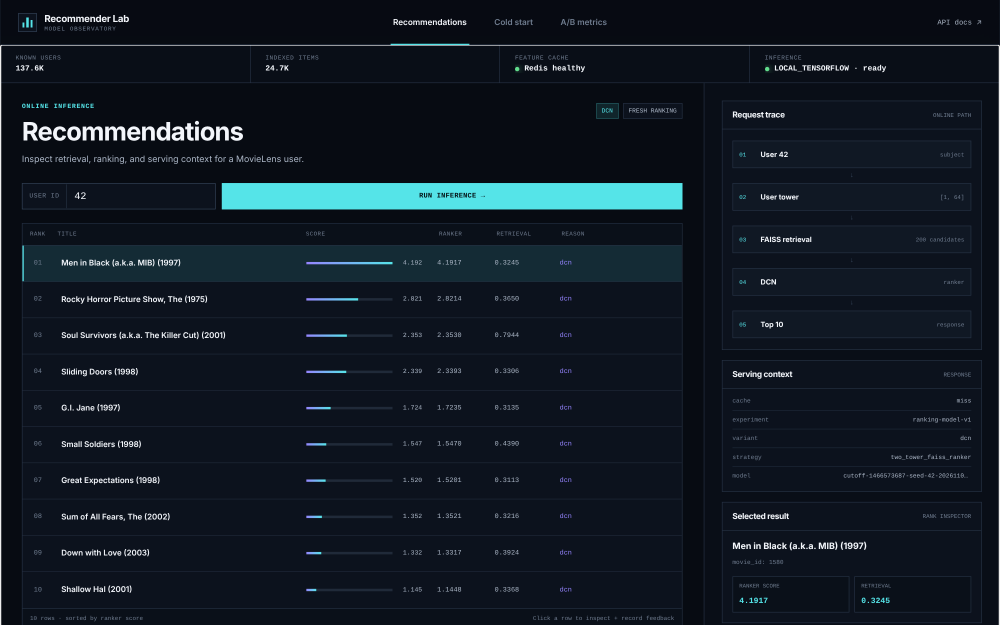

Large-scale personalized recommendation with retrieval, ranking, serving, experimentation, and orchestration.
clean + temporal split
users, items, genres
64-D embeddings
top 200 candidates
contextual re-rank
cache + feedback
Coverage-preserving training vocabulary
Inner-product similarity, seen-item filtering
1.00000.29320.31963,6220.94020.18240.22305,8680.98590.28390.33073,680500 seeded queries · K=200 · one CPU thread
Measured trade-off, not hiddensame 200 candidates · 500 users
0.01780.07130.07400.0753Known user or cold-start session profile
Tower → FAISS → assigned ranker
Versioned result + impression event
Warm benchmark used the deterministic in-memory TTL fallback.
Redis failures are fail-open
Run user 42 and inspect the ranked top 10.
Show tower → FAISS → DCN → response.
Select genres and titles, then generate.
Click a result and open A/B metrics.
Every stage has a deterministic command and an explicit contract.
Weak results and limitations are reported rather than hidden.
The system can be demonstrated, tested, and extended.